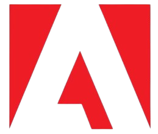
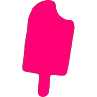
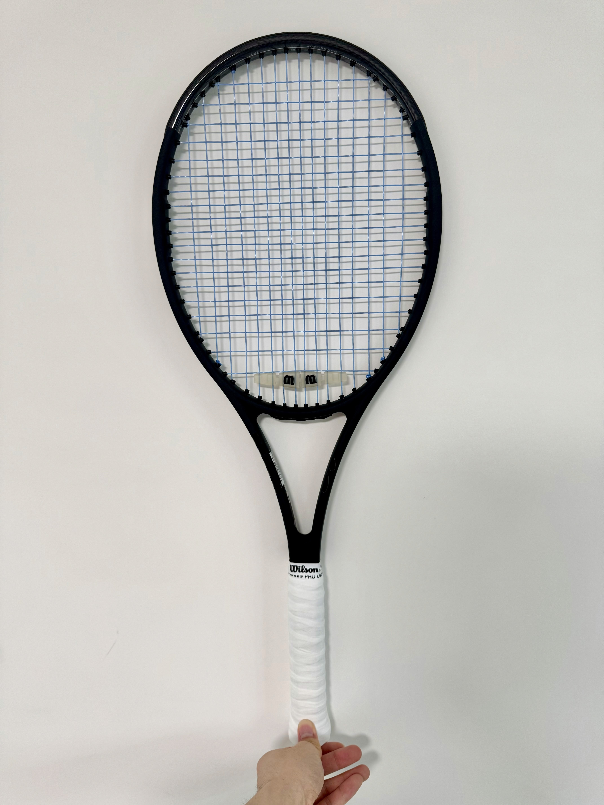
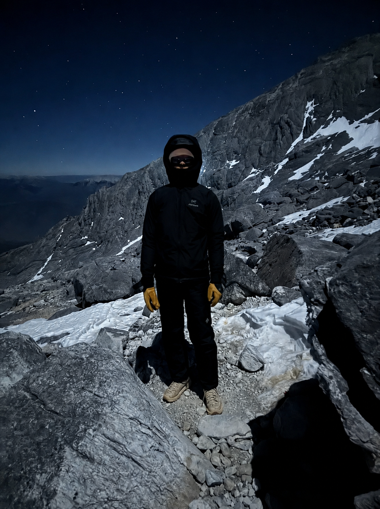

April 2026
WAN 2.7 is released!
WAN 2.7, our latest video generation model, is out.
I am a Ph.D. candidate at the Hong Kong University of Science and Technology (Guangzhou), advised by Prof. Lei Zhu and Prof. Ping Tan, and will be graduating in July 2026.
I am currently with Tongyi Lab at Alibaba, where I work on the WAN video team, focusing on video generation.
April 2026
WAN 2.7, our latest video generation model, is out.
[Researcher]
2026

[Research Intern]
2025

[Research Intern]
2021
[Research Intern]
2020
Selected first-author work. Full list available on Google Scholar.

